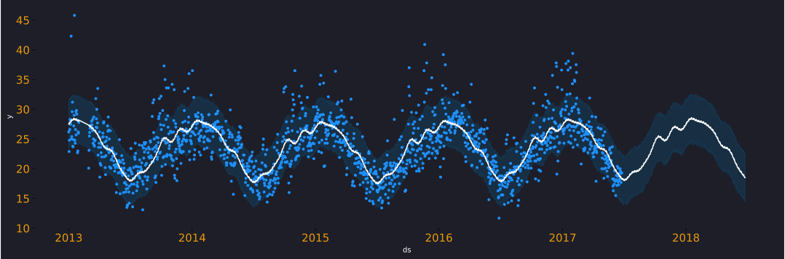
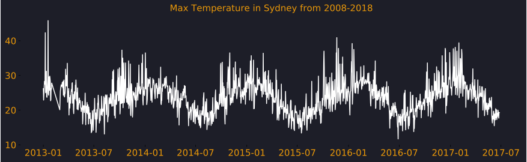
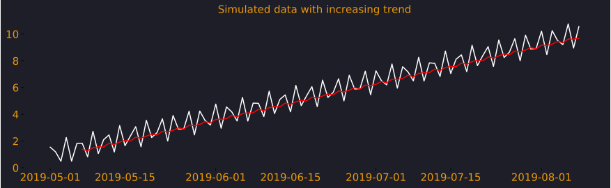

Time-Series Forecasting using Prophet- part1

Prophet is a time-series forecasting library by facebook and it's available in Python and in R. It is simple to use and requires very little classical time-series experience, for e.g. ARIMA, SARIMA etc. Thus, you can start building models quickly, get good results and become effective in no time. Considering this, prophet has become a popular library for time-series applications.
A model in prophet is defined by the following equation. This form is called general additive model, since we adding results from each of the components to get our prediction. $$ \widehat{Y}_t = g_t + s_t + h_t + x_t + \epsilon $$
$ \hat Y_t $ is the prediction.
$ g_t $ stands for the growth model, i.e., trend (logistic/linear).
$ s_t $ models seasonality using Fourier series.
$ h_t $ models holiday effects.
$ x_t $ represents any extra regressors.
$ \epsilon $ represents normally distributed errors.
What is this post about ?
In this first post on prophet ,my objective is simply to get you started with forecasting. I aim to cover the very basic to get you off the ground. In this series of posts, the aim is to cover all the features of prophet in parts. We will explore under-the-hood mathematics that defines prophet and tinker with how it's applied in code. For now, I will make sure that after reading this you know enough to get your first time-series model up and running.
All the code required to run the model is available on GitHub here
Dataset
Time-series data is where the values are recorded sequentially with respect to time, for e.g. temperature data or health tracker data etc. For this post, we will model maximum temperature data for Sydney, Australia between the years 2013-2017 and we want to forecast it another year. This data has a strong seasonal pattern with a weak trend (Fig1). If at this point you are wondering what do we mean by seasonality and trend then you must read time-series patterns by rob hyndman before reading any further.
Setting up to explore and forecast
We want to set up our environment with libraries that we would need for this forecasting exercise. So, we install the necessary packages below.
# Importing the libraries
import pandas as pd #for data manipulation
import matplotlib.pyplot as plt #for plotting
from fbprophet import Prophet #for forecasting
We then read our data which is stored as a csv.
This data contains around 24 variables but we are interested in 2 variables MaxTemp since its the target and the Date variable as it's the primary time sequence. Prophet requires the date variable to be set as a datetime object and so we must convert it so. However, the interesting thing here is that we must name our date variable as ds and the target variable as y, this is how prophet expects them to be.
# reading a csv
df = pd.read_csv('../datasets/ausraindata.csv')
# converting the string to datetime object
df['ds'] = pd.to_datetime(df['Date'])
# creating a new variable y
# i.e. target variable, same as MaxTemp
# If you wanted to, you could rename it as well.
df['y'] = df['MaxTemp']
The data contains temperature values for many locations across Australia, We are going to filter, select on Sydney, and extract data from 2013 onwards.
# filtering the data by 2 conditions
df = df.loc[(df['Location']=='Sydney') &
(df['ds'].dt.year >=2013),:]
# selecting the required variables
df = df.loc[:,['ds','y']]
As we feel the need to plot the time-series to understand how the maximum temperature (measured in Celsius degrees) has been across these years. We observe that it has peaks and valleys which we should expect as the temperature drops during winters and increases back up during summers. Thus, it's seasonal and we should expect the model to detect this pattern.
#plotting the time-series
fig, ax = plt.subplots(figsize = (15,4))
ax.plot(df['ds'], df['y'])
ax.set_title('Max Temperature in Sydney from 2013-2017')
plt.show()

Fitting a Prophet model
We have the data ready containing only 2 variables i.e. ds and y and this is sufficient to build our very basic prophet model.
The first step is to instantiate the model by calling Prophet class and define seasonality. {% sidenote '1' 'although we are just defining seasonality there are many default options that get chosen for us. e.g. by default seasonality mode is always additive but we could change it to multiplicative if required.'%}
After creating the m1 object we fit it to the data. Once, we have completed this step successfully, we must create a forecasting dataframe with future dates using the make_future_dataframe method. We use periods to define the length of the forecasting dates and then simply predict. Now the forecast1 dataframe contains train and test data along with the forecast values called yhat.
# training a prophet model
m1 = Prophet(daily_seasonality=False,
weekly_seasonality=True,
yearly_seasonality=True)
m1.fit(df)
future1 = m1.make_future_dataframe(periods=365)
forecast1 = m1.predict(future1)
forecast1.tail()
forecast1 dataframe multiple variables but the key variables we focus for now are ds,trend,weekly,yearly and yhat
$ \hat Y = $ trend + weekly + yearly
| ds | trend | weekly | yearly | yhat |
|---|---|---|---|---|
| 2018-06-21 | 24.032494 | 0.156514 | -5.219729 | 18.969280 |
| 2018-06-22 | 24.032998 | 0.007727 | -5.289494 | 18.751232 |
| 2018-06-23 | 24.033502 | -0.059232 | -5.356488 | 18.617783 |
| 2018-06-24 | 24.034006 | -0.119039 | -5.420102 | 18.494865 |
| 2018-06-25 | 24.034510 | -0.024526 | -5.479695 | 18.530289 |
Predictions, Trend and Seasonality
Prophet provides some useful functions to plot data. there are 2 backends avaiable plotly and matplotlib. We use matplotlib to plot the predictions. The function plots 95% confidence intervals as well. The predicitons are plotted as a line and the actuals as points. You could easily plot it yourself if you plotted the yhat from the forecast1 dataframe.
If we now wanted to plot trend and seasonality from the model we could easily do so by calling the plot_components method. We notice that Tuesdays and Thursdays are hotter than others and the values are relatively extremely small, this may suggest that this may not be significant. Interestingly, due to the location of australia, the weather is very different compared to other parts of the world. We observe in the yearly seasonality plot that July is the coldest while December is the hottest. {% sidenote '2' 'This is also apparent if we compare yearly seasonality with Fig1' %}.

Key Takeaways
I hope after reading this post you are confident to run your basic prophet model and make forecasts about them. Now there is a lot that I haven't covered here e.g.
1.) What are changepoints?
2.) What do we mean by logistic and linear trend?
3.) How is seasonality calculated (Fourier series)?
4.) Time-series cross-validation and performance metrics etc.
5.) How do you boost model performance?
Future posts in this series will help answer all these questions. My goal for this one was to get you started without making you feel overwhelmed with the features. Once again, all the code is stored here, there is also a utils.py file in the project that gives the appearance of the charts.
Let me know in the comments, if you found this post helpful or you find yourself full of doubts.